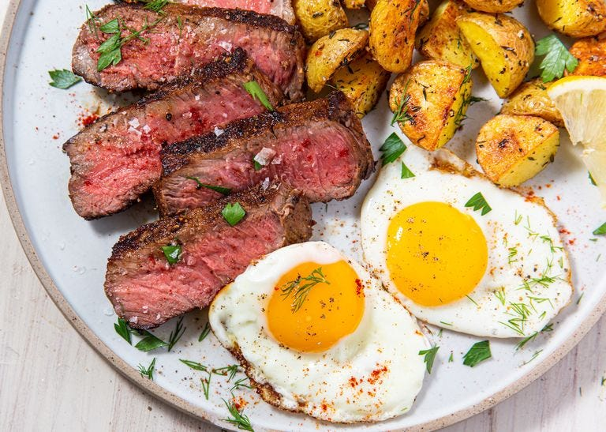

Steak and Eggs

Ingredients
- 1"-thick New York strip steak (about 13 oz.)
- 2 tbsp. vegetable oil
- 1 tsp. Kosher salt
- 2 tbsp. butter
- 4 Eggs
- Roasted Potatoes, for serving
Directions
- Remove steak from refrigerator and let come to room temperature, 30 minutes.
- Rub steak with 1 tablespoon vegetable oil and season all over with 1 ½ teaspoon salt, 1 teaspoon pepper, and ¾ teaspoon paprika.
- Heat a medium cast iron skillet over medium-high heat. Add steak and cook, flipping once, until a deep golden crust begins to form on both sides of the steak, about 5 minutes total.
- Reduce heat to medium-low and add butter to pan. Using a spoon, continually baste butter onto steak to form a deeper golden crust. Flip steak and repeat, 2 to 3 minutes in total.
- Using a meat thermometer, check for doneness: 120-125°F for medium rare, 130°F for medium.
- Transfer steak onto a cutting board and let rest about 10 minutes.
- Meanwhile, heat remaining oil in a nonstick skillet over medium heat until shimmering. Crack egg into pan and cook 3 to 4 minutes, or until white is set and edges are just beginning to brown. Remove from pan and season with salt and pepper.
- Slice steak into 1" strips on a bias, against the grain.
- Serve steak with eggs and potatoes. Garnish with herbs and season with more salt, pepper, and paprika to taste.
Back